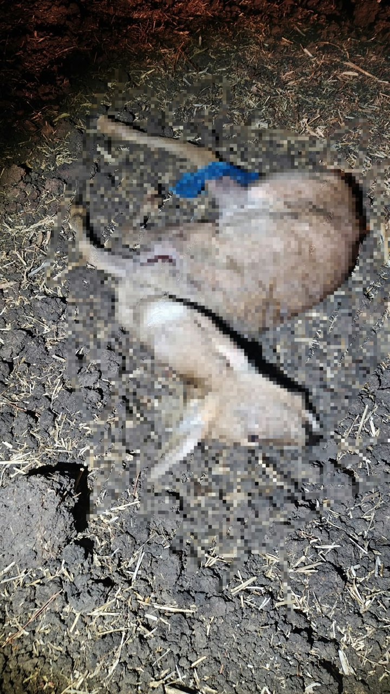

Patru bărbați au fost reținuți pentru 24 de ore într-un dosar penal de braconaj cinegetic, după ce polițiștii mehedințeni au făcut percheziții domiciliare în localitatea Verbița, județul Dolj. Ancheta este coordonată de Parchetul de pe lângă Judecătoria Strehaia.
Duminică, 1 noiembrie, polițiștii Serviciului Arme, Explozivi și Substanțe Periculoase din cadrul IPJ Mehedinți au pus în executare cinci mandate de percheziție domiciliară, într-un dosar privind săvârșirea infracțiunilor de braconaj cinegetic și transportul vânatului provenit din braconaj.
Ce s-ar fi întâmplat pe Fondul Cinegetic Smadovița
Potrivit cercetărilor, în noaptea de 24 spre 25 octombrie, în jurul orei 23:30, pe raza Fondului Cinegetic Smadovița, cinci persoane cu vârste cuprinse între 22 și 35 de ani, toate din Verbița, ar fi desfășurat activități de braconaj.
Metoda descrisă de anchetatori arată o vânătoare ilegală pregătită: bărbații ar fi folosit cinci câini din rasa ogar, sisteme de iluminat pe timp de noapte și o cameră cu termoviziune, care detectează căldura corpului animalelor în întuneric.
Cu această ocazie, suspecții ar fi capturat un exemplar de căprior, femelă, specie de interes cinegetic, pe care l-ar fi transportat apoi cu un autoturism de teren.
🔎 Pe scurt – dosarul de braconaj
Când: noaptea de 24 spre 25 octombrie 2026, în jurul orei 23:30
Unde: Fondul Cinegetic Smadovița
Suspecți: cinci persoane, 22–35 de ani, din Verbița (Dolj)
Mijloace folosite: 5 ogari, lanterne/iluminat de noapte, cameră cu termoviziune, autoturism de teren
Vânatul: un căprior femelă
Percheziții: 5 mandate, 1 noiembrie 2026
Măsuri: 4 bărbați reținuți 24 de ore
Coordonare: Parchetul de pe lângă Judecătoria Strehaia
Patru reținuți, propunere pentru o nouă măsură preventivă
În urma perchezițiilor, patru bărbați au fost conduși la sediul Inspectoratului de Poliție Județean Mehedinți, pentru continuarea cercetărilor. Pe baza probelor administrate, față de aceștia a fost dispusă măsura reținerii pentru 24 de ore.
Astăzi, 2 noiembrie, cei patru urmează să fie prezentați Parchetului de pe lângă Judecătoria Strehaia, cu propunerea dispunerii unei alte măsuri preventive.

Mai multe structuri ale Poliției, implicate în acțiune
La acțiune au participat și polițiști din cadrul Serviciului de Investigații Criminale, Serviciului de Investigare a Criminalității Economice, Biroului pentru Protecția Animalelor și Poliției Orașului Strehaia, sprijiniți de luptătorii Serviciilor pentru Acțiuni Speciale (SAS) Mehedinți și Dolj.
Cercetările continuă sub coordonarea procurorului de caz, pentru documentarea întregii activități infracționale.
Ce înseamnă braconajul cinegetic
Braconajul cinegetic înseamnă, pe scurt, vânătoarea ilegală: fără autorizație, în perioade sau zone interzise ori cu mijloace interzise de lege. Legea vânătorii interzice, printre altele, vânătoarea pe timp de noapte cu ajutorul surselor de lumină și folosirea ogarilor sau a metișilor de ogar la vânătoare. Atât braconajul, cât și transportul vânatului provenit din braconaj sunt infracțiuni pedepsite cu închisoare sau amendă.
Căpriorul este una dintre speciile de vânat cele mai răspândite în zona de câmpie și deal a Olteniei, iar populațiile sale sunt gestionate prin cote stabilite anual pe fiecare fond cinegetic. Braconajul afectează direct aceste efective și activitatea gestionarilor legali ai fondurilor de vânătoare.
Persoanele vizate de anchetă beneficiază de prezumția de nevinovăție până la pronunțarea unei hotărâri definitive.
Urmăriți secțiunea Cronica Neagră de pe MehedintiAzi.ro și pagina de Facebook Mehedinți Azi pentru cele mai noi informații din activitatea polițiștilor mehedințeni.
Redactia MehedintiAzi.ro, pe baza informațiilor transmise de IPJ Mehedinți